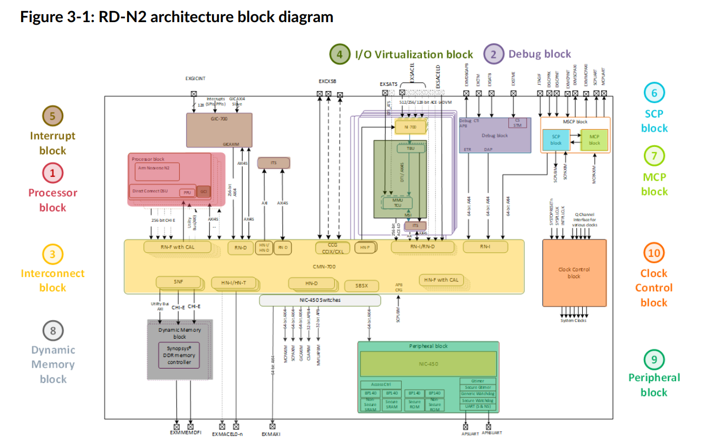

ARM N2 参考设计
ARM N2 参考设计（ARM Neoverse N2 reference design）是一种基于ARM架构的处理器设计，专注于高性能和高效能计算。Neoverse N2 是 ARM 公司推出的一款针对数据中心、云计算和边缘计算等领域的高性能 CPU 架构。以下是一些关键特性：
- 高性能计算：N2 架构旨在提供高性能计算能力，适用于数据中心和云计算环境中的各种高负载应用，如人工智能、大数据分析和高性能计算（HPC）等。
- 多核设计：Neoverse N2 支持多核设计，能够实现更高的并行计算能力，从而提高整体计算效率。
- 能效优化：ARM N2 在提高性能的同时，注重能效优化，旨在提供更低的功耗和更高的性能比，适合在需要高效能计算的场景中使用。
- 扩展性：N2 架构具有良好的扩展性，支持大规模部署，可以适应不同规模和需求的数据中心和边缘计算环境。
- 兼容性：Neoverse N2 保持了对 ARM 生态系统的兼容性，支持现有的 ARM 软件和工具链，方便开发者进行迁移和优化。
通过这些特性，ARM N2 参考设计为构建高效能和高性能计算平台提供了一个可靠的基础，适用于多种现代计算需求和应用场景。
ARM Neoverse N2 参考设计中使用了多种 ARM 的知识产权（IP）模块，以实现其高性能和高效能的目标。以下是其中一些关键的 IP 组件：
- ARM Neoverse N2 CPU 核心：这是 N2 设计的核心，提供了高性能的计算能力。N2 核心基于 ARMv9 架构，支持高频率和多核配置，适合处理大规模并行工作负载。
- System Level Cache (SLC)：ARM N2 参考设计中集成了系统级缓存（SLC），用于在多个核心和其他系统组件之间共享数据，从而提高整体系统的性能和效率。
- CCIX 和 CXL 支持：N2 设计支持 CCIX（Cache Coherent Interconnect for Accelerators）和 CXL（Compute Express Link）接口，这些接口用于连接加速器和其他外部设备，提供高带宽、低延迟的数据传输能力。
- AMBA (Advanced Microcontroller Bus Architecture) 总线架构：AMBA 是一种用于片上系统（SoC）设计的总线标准，用于连接各种 IP 模块和外设。N2 参考设计中使用了 AMBA 架构来实现高效的数据传输和通信。
- TrustZone 安全技术：ARM TrustZone 技术提供了硬件隔离机制，增强了系统的安全性，适用于保护敏感数据和执行安全操作。
- Mali GPU（可选）：虽然 N2 主要专注于 CPU 性能，但在某些应用场景中，可能会集成 ARM 的 Mali GPU，以提供图形处理和加速计算能力。
- SMMU (System Memory Management Unit)：用于实现高级的内存管理功能，支持虚拟化和内存保护，提升系统的灵活性和安全性。
通过集成这些关键 IP 组件，ARM Neoverse N2 参考设计能够提供高性能、高效能和高扩展性的计算解决方案，满足数据中心、云计算和边缘计算等多种应用场景的需求。
本文通过从一些High Level 角度，简单介绍该处理器架构及其基本功能。
主要参考的是这份文档 Arm Neoverse N2 reference design Technical Overview

上图是整体架构，包括片内互连总线CMN-700，与PICe子系统相连的SMMU和NI-700，挂在RNI节点上的SCP，分布在不同位置的GIC与挂在SNF上的memory controller，及最关键的大core。